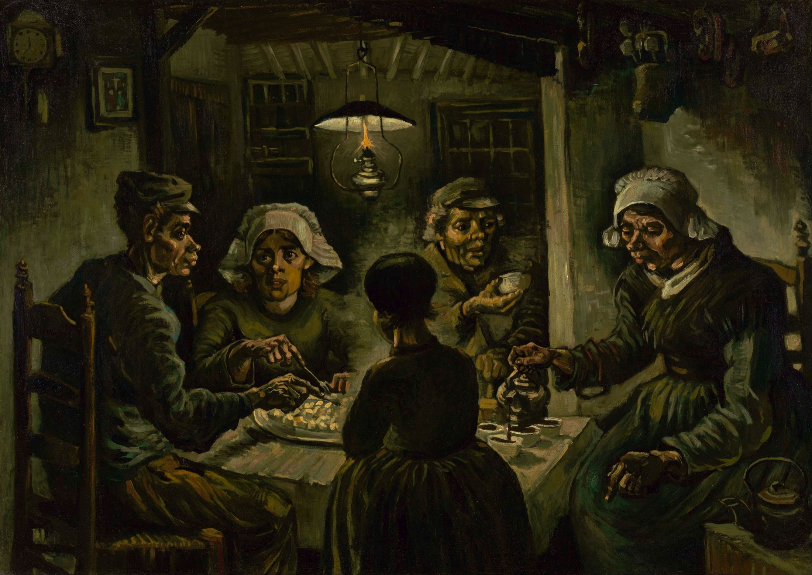
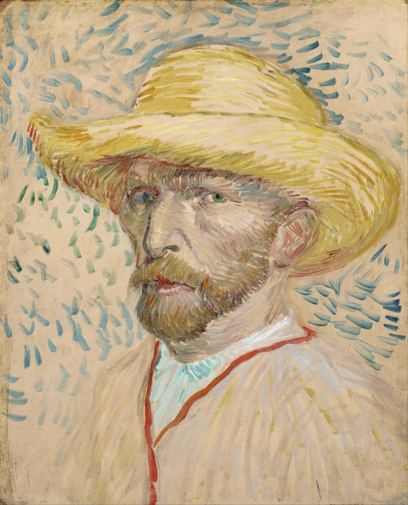
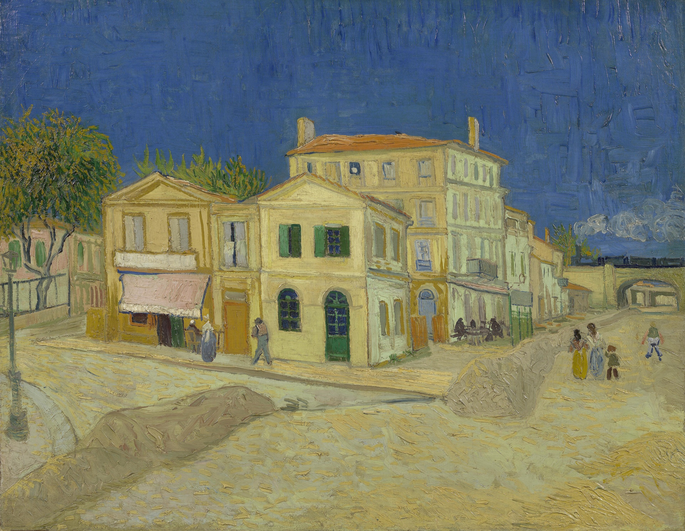
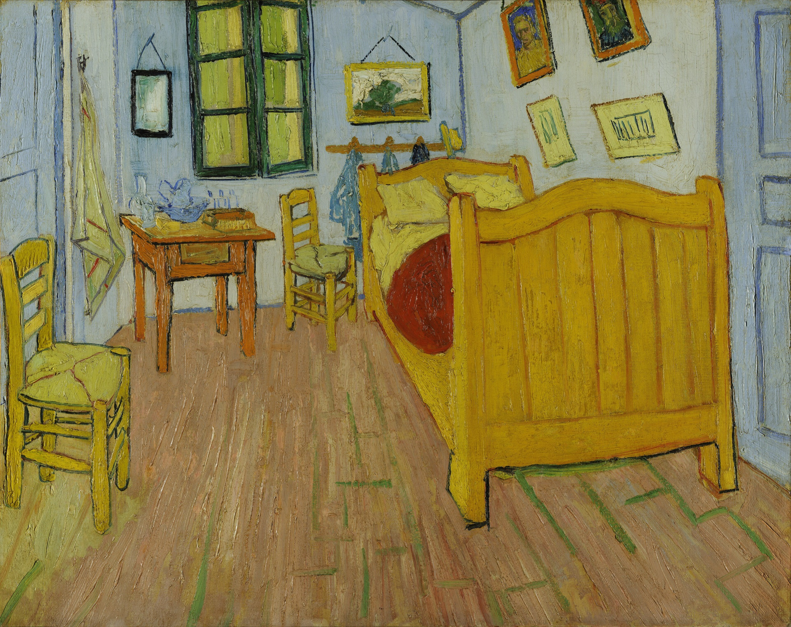
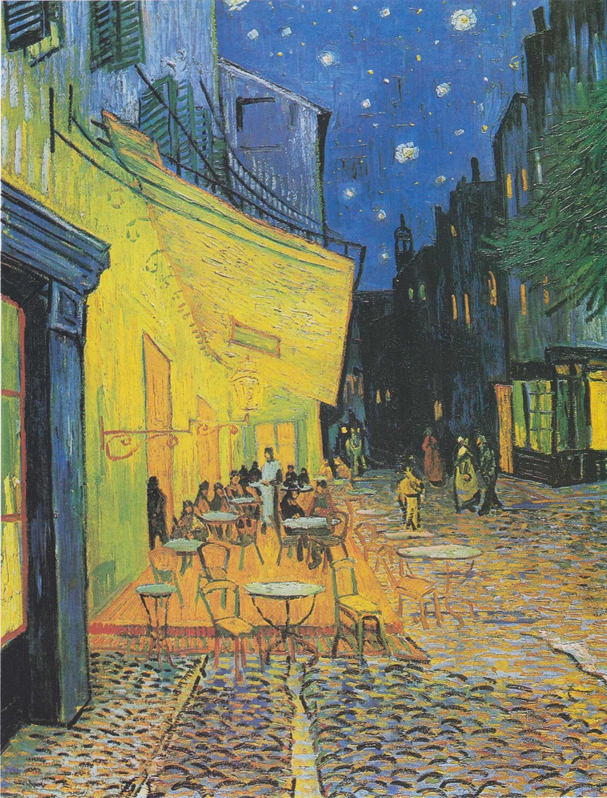
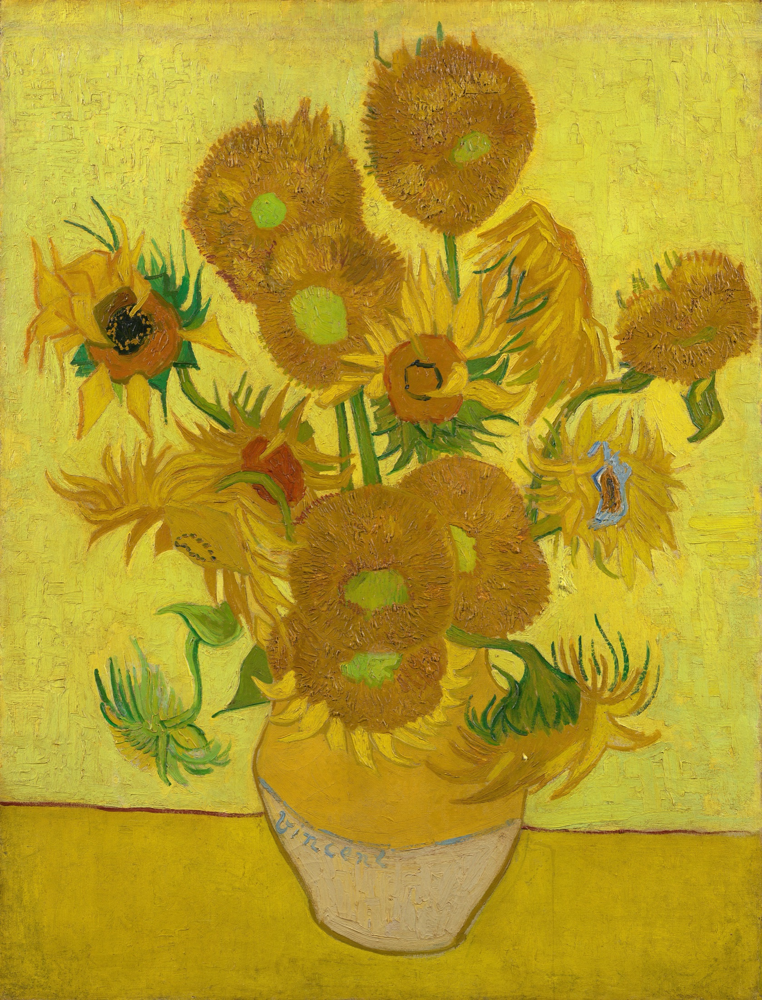
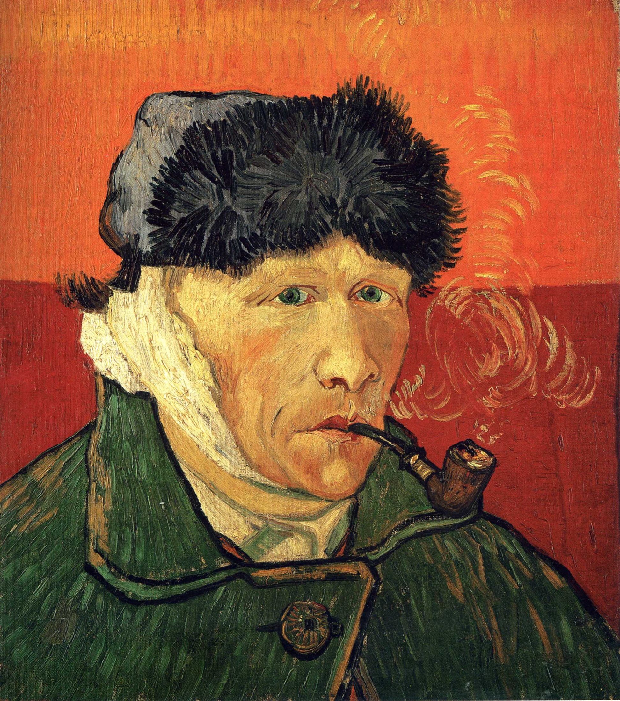
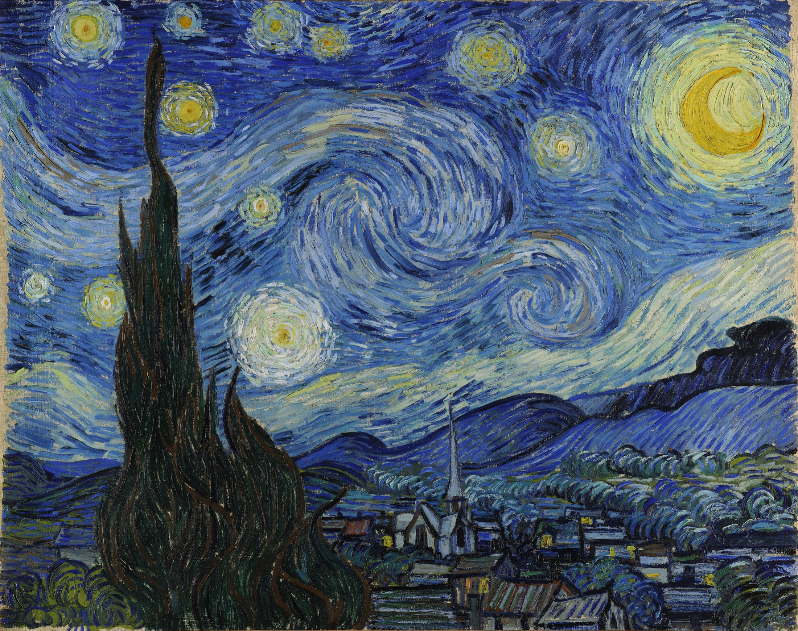
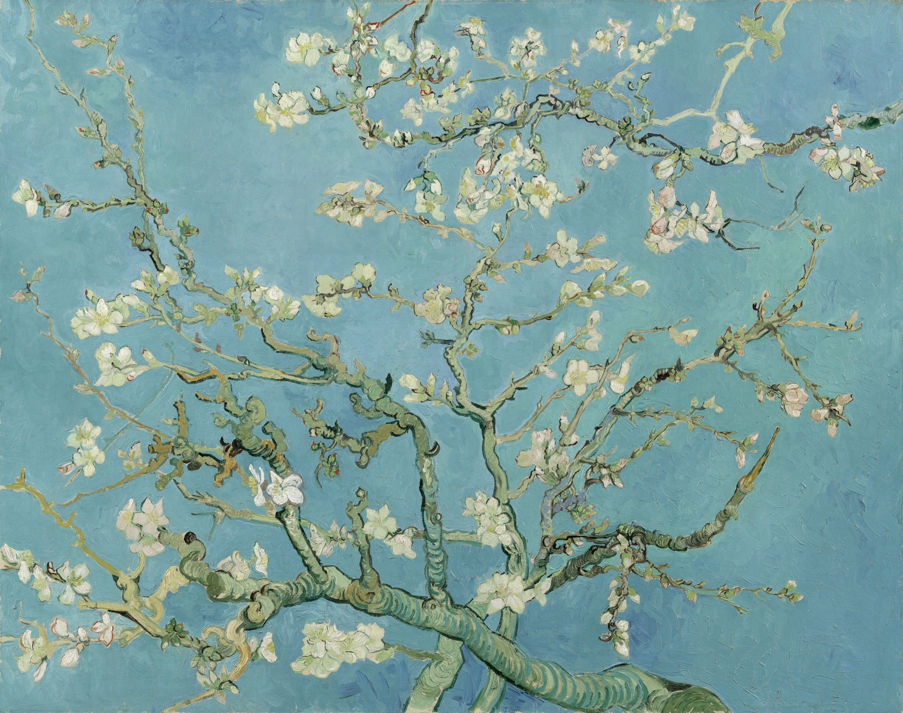
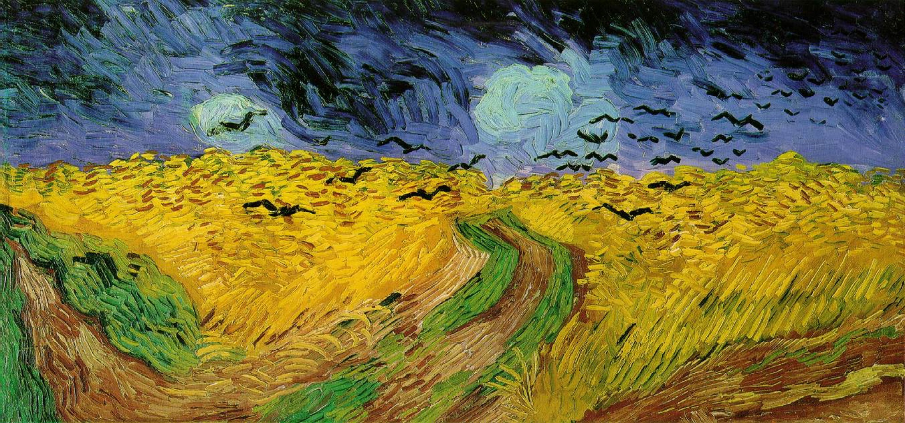

The Potato Eaters
Oil on canvas · Van Gogh Museum, Amsterdam
In thirty-seven years, he painted nearly nine hundred canvases.
He sold one.
This is his life — told in ten paintings.










“I dream my painting,
and then I paint my dream.”